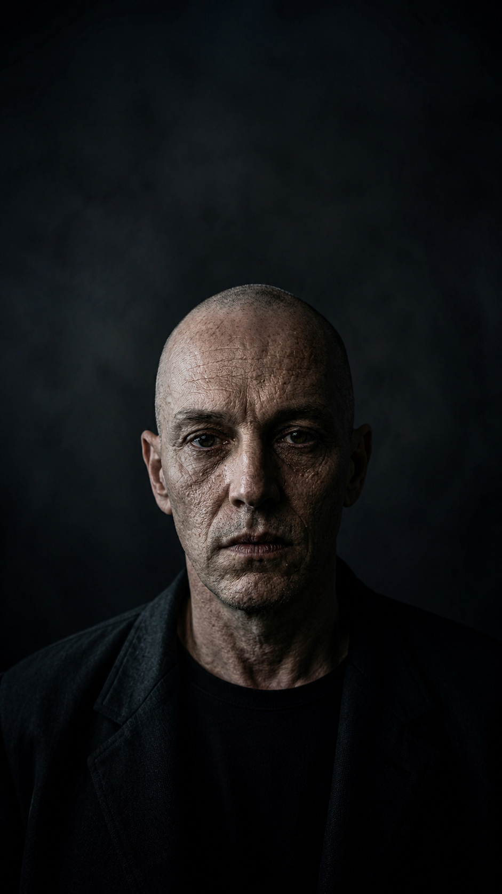

Die drei Anteile in dir.
Nova ist keine Figur. SuperNova ist kein Effekt. Gary ist kein Feind. Sie sind innere Kräfte, die in jedem Menschen wirken.
Du bist nicht nur eine Stimme.
In dir spricht nicht nur ein Ich. In dir gibt es Anteile. Alte Schutzprogramme. Wünsche, die nie Raum bekommen haben. Ängste, die einmal sinnvoll waren. Kräfte, die zu lange kontrolliert wurden.
Nova, SuperNova und Gary sind Bilder für diese inneren Bewegungen. Nicht als Diagnose. Nicht als Schublade. Sondern als Spiegel.
Der Moment, in dem du erkennst, welcher Anteil gerade in dir führt, ist oft der erste Moment, in dem du wieder Wahlfreiheit bekommst.
Der innere Anteil, der wieder klar sehen will.
02 SuperNovaDie rohe Kraft, die nicht mehr klein bleiben will.
03 GaryDer alte Schutz, der Kontrolle mit Sicherheit verwechselt.
Nova
Nova ist der Anteil in dir, der wieder hören will, was wirklich stimmt. Sie ist nicht laut. Nicht perfekt. Nicht unverwundbar. Nova ist die stille Instanz, die merkt: Ich kann nicht ewig gegen mich selbst leben.
Psychologisch ist Nova der Moment der Selbstwahrnehmung. Der kleine Abstand zwischen Reiz und Reaktion. Der Teil, der nicht sofort flieht, kämpft oder funktioniert, sondern innehält und fragt: Was passiert hier wirklich in mir?
Nova ist nicht perfekte Ruhe. Nova ist Ehrlichkeit ohne Flucht.
Psychologisch
Nova steht für Bewusstsein, Selbstkontakt, Klarheit, innere Beobachtung und die Fähigkeit, nicht mehr automatisch zu reagieren.
Spirituell
Nova ist der innere Kreis, der wieder in seine Mitte findet. Sie ist das leise Wissen, das unter dem Lärm nie verschwunden ist.
SuperNova
SuperNova ist der Anteil in dir, der nicht mehr klein bleiben will. Sie erscheint oft nicht sanft. Sie kommt, wenn zu viel geschluckt, zu viel angepasst und zu viel kontrolliert wurde.
Psychologisch ist SuperNova verdrängte Energie. Wut, Mut, Grenze, Wahrheit, Entscheidung. Nicht als Drama. Sondern als Lebenskraft, die zu lange keinen Raum hatte und jetzt nicht mehr höflich fragen will.
SuperNova zerstört nicht dich. Sie zerstört, was dich zu klein gehalten hat.
Psychologisch
SuperNova steht für unterdrückte Kraft, Grenze, Befreiung, Selbstbehauptung und den Moment, in dem Anpassung nicht mehr reicht.
Spirituell
SuperNova ist der Bruch in der alten Form. Durch diesen Bruch kommt Energie zurück, die lange nicht mehr fließen durfte.

Gary
Gary ist der Anteil in dir, der kontrolliert, funktioniert und sich anpasst. Er ist die Stimme, die sagt: Reiß dich zusammen. Mach keinen Ärger. Sei nicht zu viel. Bleib sicher.
Psychologisch ist Gary ein Schutzmechanismus. Er ist entstanden, weil Anpassung irgendwann sinnvoll war. Vielleicht hat sie dich geschützt. Vielleicht hat sie dir geholfen, durchzukommen. Aber was dich früher geschützt hat, kann dich heute klein halten.
Gary ist nicht dein Feind. Er ist der Teil, der einmal dachte, dich retten zu müssen.
Psychologisch
Gary steht für Kontrolle, Druck, Angst, Anpassung, Funktionieren und alte innere Regeln, die längst nicht mehr geprüft wurden.
Spirituell
Gary ist die fremde Form, in die du dich gepresst hast, um dazuzugehören. Er zeigt, wo du dich selbst verlassen hast.
Keiner dieser Anteile ist falsch.
Gary schützt. Nova erkennt. SuperNova befreit. Problematisch wird es erst, wenn einer dieser Anteile allein die Führung übernimmt.
Wenn Gary allein führt, funktionierst du mehr, als du lebst. Wenn SuperNova allein führt, kann deine Kraft alles verbrennen, auch dich selbst. Wenn Nova führt, entsteht Bewusstsein. Nicht als Kontrolle, sondern als innere Ordnung.
Die Reise ist nicht, Gary loszuwerden oder SuperNova zu unterdrücken. Die Reise ist, alle Anteile zu erkennen und sie nicht länger unbewusst dein Leben steuern zu lassen.
Heilung beginnt nicht dort, wo ein Anteil verschwindet. Sondern dort, wo keiner mehr allein die Kontrolle hat.
Spirituell gesehen.
Gary ist die äußere Form. Nova ist die innere Mitte. SuperNova ist der Riss, durch den Wahrheit zurückkehrt.
Deshalb ist Nova keine Geschichte über Optimierung. Es geht nicht darum, besser zu funktionieren. Es geht darum, echter zu werden.
In jedem Menschen gibt es den Druck der Außenwelt, die leise Wahrheit der Innenwelt und den Moment, in dem etwas Größeres durchbricht.
Welcher Anteil führt dich gerade?
Der Test zeigt dir nicht, wer du bist. Er zeigt dir, welcher Anteil gerade am lautesten in dir spricht.